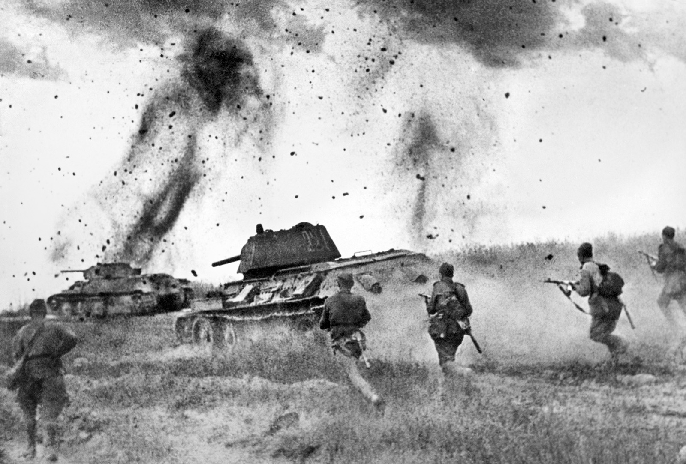

Ключевые битвы
Какие битвы Великой Отечественной Войны определили ход истории
Великая Отечественная война стала одним из самых значимых и трагических событий в истории СССР. Для советских людей она началась 22 июня 1941 года и закончилась 9 мая 1945 года. В этот период происходили самые важные сражения, которые в итоге и решили исход всей войны, стали основой победы над нацистской Германией. Все годы войны были полны трудностей и бедствий, каждое сражение и каждый подвиг были важными. Однако некоторые битвы вошли в историю мировых войн благодаря мудрости военачальников и отваге простых солдат. Сегодня мы расскажем о таких сражениях.
Битва за Москву
Эта первая серьезная и решающая битва Великой Отечественной войны длилась с 30 сентября по 7 января 1942 года. Немецкие войска уже стояли под Москвой и положение советских войск казалось отчаянным. Захват Москвы означал бы практически победу Германии. Причем «молниеносную победу», к которой захватчики так стремились, имея подобный опыт в других странах. Нацисты не жалели для этого солдат, танков и авиации. Однако и Советская армия не собиралась уступать. Была организована переброска войск с Дальнего Востока по железной дороге. Армия СССР изматывала врага и в итоге перешла в контрнаступление, развеяв миф о непобедимых фашистах.
Битва за Ленинград
На протяжении практически всей войны Ленинград находился в блокаде. Битва за освобождение города стала самым длительным сражением Великой Отечественной войны. Оно длилось с 10 июля 1941 года по 9 августа 1944 года. Подвиг совершили не только Советские воины, но и жители Ленинграда, героически преодолевавшие лишения, поддерживающие друг друга в условиях голода, холода, постоянных бомбежек. У немецкой армии было множество преимуществ в этом сражении, но сила духа, отвага и мужество помогли прорвать блокаду в 1943 году и окончательно снять ее в 1944-ом. Несмотря на все разрушения и огромное количество смертей среди мирного населения и военных, Ленинград устоял.
Битва за Сталинград
Мало кто не слышал о знаменитой Сталинградской битве, которая стала решающей и переломной в ходе Великой Отечественной войны. Она длилась с июля по ноябрь 1942 года. Немецкие войска во главе с фельдмаршалом Паулюсом наступали на юг, чтобы потом захватить нефтяные месторождения на территории Кавказа. Сложная оборонительная операция завершилась тем, кто враг оказался в котле окружения и немецкие войска были сломлены морально. Советские солдаты наоборот уверились в грядущей победе. Бои за Сталинград были очень суровыми, кровопролитными и жестокими. Однако все знали о военно-стратегическом значении этой битвы, проявились стойкость и силу духа.
Битва на Курской дуге

Битва на Курской дуге разделилась на два этапа:
1. оборонительная операция
2.Наступательная операция
Она стала самым крупным танковым сражением, проходившим на территории Европы. За всю историю войны там участвовало самое большое количество независимых танковых формирований. Несмотря на то, что фашисты чувствовали себя уверенно в самом начале, они оказались разгромлены, инициатива перешла к Советской армии, а в Германии многие окончательно утратили надежду на победу. Важную роль сыграла и работа советской разведки, благодаря которой военачальники знали изначальный план немцев и смогли выстроить грамотную боевую стратегию.
Освобождение Крыма
8 апреля 1944 года началась операция по освобождению Крыма. Она длилась 35 дней. Битва за Крым была очень значимой, так как после ее окончания Советская Армия оказалась в состоянии удерживать нацистское наступление в восточной части СССР. Гитлер называл Крым «вторым Сталинградом». По значимости эта битва не уступала Сталинградской. Самые суровые бои велись в районе Севастополя. Город лежал в руинах, но сражение за него было началом дороги на Берлин.
Белорусская операция
Белорусская наступательная операция «Багратион» проводилась с 23 июня по 29 августа 1944 года. Это было одно из самых крупных поражений Германии, Советские войска разгромили группу армий вермахта «Центр», считавшуюся сильнейшими элитными войсками. Фашисты не ожидали наступления на этом участке фронта и выбрали неправильную тактику. Гитлер настаивал на обороне так называемых «крепостей» — важных географических точек. Советские войска взяли 11 из 12 «крепостей» уже в первые три недели операции.
Штурм Берлина

Наступательная операция на Берлин проходила в апреле-мае 1945 года. Это была последняя крупная битва Второй Мировой войны в Европе. СССР и союзники победили нацистскую Германию, освободили Европу и дали мирному населению Германии возможность начать новую жизнь, без власти нацистов. Взятие рейхстага стало финальной точкой в Великой Отечественной войне. В битвах Великой Отечественной войны наши предки явили пример мужества, любви к Родине. Ради мира для будущих поколений они жертвовали жизнью. Важно знать и помнить уроки истории, чтобы трагедия мировой войны никогда не повторилась.